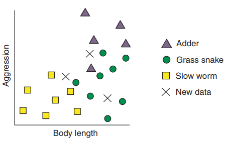
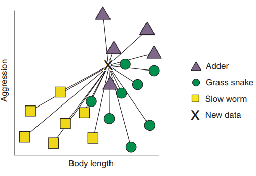
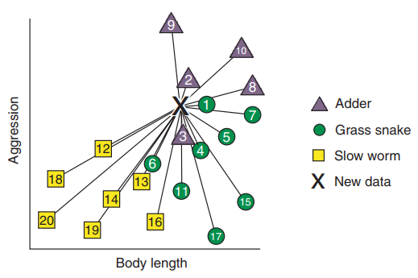
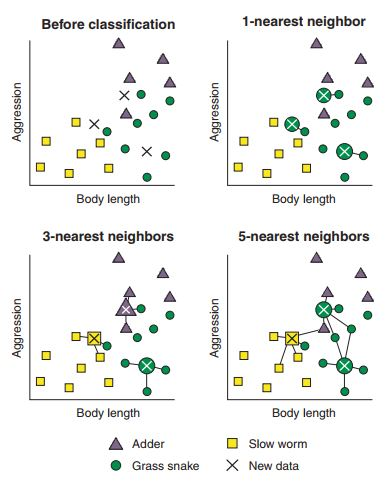
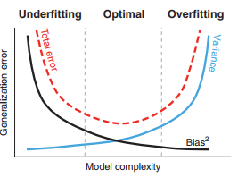
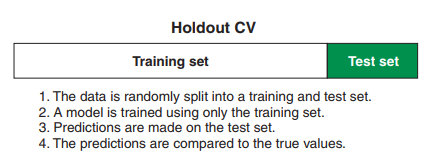

Classifying based on similarities with k-nearest neighbours.
The k-nearest neighbour algorithm uses labeled data and therefore it is a supervised learning algorithm.
How does the kNN learn?
Examples of snakes in UK
Two species of venomous snakes- grass snake and adder.
Slow worm - a limbless reptile mistaken for a snake.
Objective: Build a kNN classifier to help you quickly classify future specimens you come across.
Figure 3.1 Body length and aggression of reptiles.

The two phases of the kNN algorithm;
The training phase: In this phase the algorithm stores the data.
The prediction phase: In this phase the kNN algorithm calculates the distance between each new, unlabeled case and all the labeled cases. The term distance indicates the nearness in terms of body-weight and aggression.
The distance metric is often called the Euclidean distance (a straight-line distance between two points on a plot).
Figure 3.2 The first step of kNN algorithm: calculating distance.

Next, for each unlabeled case, the algorithm ranks the neighbours from the nearest (most similar) to the furthest (the least similar).
Figure 3.3 The second step of the kNN algorithm: ranking the neighbours.

The algorithm identifies k-labelled cases nearest to unlabeled cases.
The k-labeled cases are most similar in-terms of the variables to the unlabeled case.
Whatever class most of the k-nearest neighbours belong to is what the unlabeled case is classified as.
Figure 3.4 The final step: Identifying the k-nearest neighbours and taking the majority vote.

Building your first kNN model.
You are trying to improve the diagnosis of patients with diabetes.
You collect data and record if they were diagnosed as healthy, chemically diabetic or overtly diabetic.
You want to use a kNN algorithm to train a model that can predict which of these classes a new patient will belong to so that diagnoses can be improved.
This is a three class classification problem.
Lets look at the diabetes data
Code
# required packageslibrary(mclust)library(tidyverse)library(mlr)# the datasetdata(diabetes, package ='mclust')(as_tibble(diabetes) -> diabetes)
# A tibble: 145 × 4
class glucose insulin sspg
<fct> <dbl> <dbl> <dbl>
1 Normal 80 356 124
2 Normal 97 289 117
3 Normal 105 319 143
4 Normal 90 356 199
5 Normal 90 323 240
6 Normal 86 381 157
7 Normal 100 350 221
8 Normal 85 301 186
9 Normal 97 379 142
10 Normal 97 296 131
# … with 135 more rows
The class shows three cases of diabetes - Normal, Chemical, and Overt.
glucose: the level of blood glucose.
insulin: the level of insulin
sspg: steady state level of blood glucose.
The relationship between the variables are plotted below:
Reproduce the plot of glucose versus insulin, but use shapes rather than colors to indicate which class each case belongs to. Once you’ve done this, modify your code to represent the classes using shape and color.
From the data (scatter plots too) we can see that there are differences in the continuous variables among the three classes.
So let’s build a kNN classifier that can predict diabetes status from measurements of future patients.
It is important to scale the predictor variables by dividing them by their standard deviation.
This preserves the relationship between the variables.
This ensures that variables measured on larger scales are not given more importance by the algorithm.
In our case, the mlr package can take care of the scaling of the varaibles as it is in the algorithm.
Using mlr to train the kNN model
The three stages in mlr package:
Define the task: Classify the data with the class variable as the target variable.
Define the learner: The learner is the name of the algorithm that we want to use.
Train the model: After the learner generates the model, use it to make future predictions.
1. Defining the task.
The components needed to define a task are:
Data containing the predictor variables
The target variable we want to predict.
In case of supervised learning the target variable will be categorical if we have a classification problem, and continuous if we have a regression problem.
In case of unsupervised learning we omit the target variable from our task definition.
To define a classification task, we use the makeClassifTask() function.
Model for learner.id=classif.knn; learner.class=classif.knn
Trained on: task.id = diabetes; obs = 145; features = 3
Hyperparameters: k=2
Now that we have our model, let’s pass the data through it and see how it performs.
(predict(knnModel, newdata = diabetes)-> knnPred)
Prediction: 145 observations
predict.type: response
threshold:
time: 0.00
truth response
1 Normal Normal
2 Normal Normal
3 Normal Normal
4 Normal Normal
5 Normal Normal
6 Normal Normal
... (#rows: 145, #cols: 2)
In order to assess the performance of our model we shall use the performance() function.
We also specify the performance metrics by supplying them as a list to the measures argument.
The two measures are
mmce the mean misclassification error, which is the proportion of cases classified as a case other than their true class.
acc the accuracy, i.e. the proportion of cases that were correctly classified by the model.
We can see that the model is correctly classifying 93.1 percentage of cases.
However, we are not sure about the model performance on unseen data.
Therefore, model performance should not be assessed in this way.
Balancing two sources of model error: the bias-variance tradeoff.
Underfitting and overfitting are two important sources of errors in model building.
In case of underfitting, we may have included few predictors or too simple a model to adequately describe the relationships/patterns in data.
The fitted model is biased, i.e. a mmodel that performs poorly on the data we use to train it and on new data.
Because we typically like to explain away as much variation in our data as possible, and because we often have many more variables than are important for our problem, underfitting is less frequently a problem than overfitting.
In case of overfitting we may include too many predictors or too complex a model.
Here, we usually model the noise along with the patterns/relationships in the data.
Noise in a dataset is variation that is not systematically related to variables we have measured, but rather is due to inherent variability and/or error in measurement of our variables.
If we model the noise, our model may perform very well on the training data but not on new data.
Underfitting and overfitting both introduce error and reduce the generalizability of the model: the ability of the model to generalize to future, unseen data.
They are also opposed to each other: somewhere between a model that underfits and has bias, and a model that overfits and has variance, is an optimal model that balances the bias-variance trade-off.

The Bias-Variance Tradeoff
So how do I tell if I am overfitting or underfitting?
The answer is a technique called cross-validation.
As mentioned before, one should never evaluate the performance of a model by using the seen data.
The model could be extremely overfit (modelling all the noise in the data) but still have good predictive accuracy.
The cross-validation process:
Split the data into a training set and a testing set.
Train the model using the training set and use the testing set to test it.
The closeness of the predictions are summarised with performace metrices.
Once the model is cross-validated, we can use all the data (including the test set) to train the final model. This is because the more the data we train our model with, the less bias will it have.
There are three common cross-validation approaches:
Holdout cross-validation
K-fold cross-validation
Leave-one-out cross-validation
1. Holdout cross-validation

A commonly used split is to use two-thirds of the data for trainig and the remaining for testing.
Making a holdout resampling description
Make a resampling description i.e. a set of instructions how the data will be split into training and testing sets.
The optional argument stratify = TRUE ensures that the proportion of each class of patient in each set is maintained.
This is important in classification problems like ours, where the groups are very unbalanced (we have more healthy patients than both other groups combined) because, otherwise, we could get a test set with very few of one of our smaller classes.
Performing Holdout cross-validation
We can run the Holdout CV using the resample() function.
The mean misclassification error and the accuracy values are 0.2040816, 0.7959184 respectively.
We can notice two things here:
The accuracy of the model as estimated by the Holdout CV is less than when we evaluated its performance on the data we used to train the full model. This exemplifies the point earlier that models will perform better on the data that trained them than on unseen data.
Misclassification error mmce and the accuracy acc values:
Holdout CV
0.2040816, 0.7959184
Performance of the full model
0.0689655, 0.9310345
We can notice two things here:
Your performance metrics will probably be different than mine. In fact, run the resample() function over and over again, and you’ll get a very different result each time! The reason for this variance is that the data is randomly split into the test and training sets. Sometimes the split is such that the model performs well on the test set; sometimes the split is such that it performs poorly.
Exercise 2
Use the makeResampleDesc() function to create another holdout resampling description that uses 10% of the data as the test set and does not use stratified sampling (don’t overwrite your existing resampling description).
Calculating a confusion matrix
A confusion matrix is a tabular representation of the true and predicted class of each case in the test set.
This gives a better idea of which groups are being correctly classified and which are being misclassified.
In mlr package we can calculate the confusion matrix using the calculateConfusionMatrix() function.